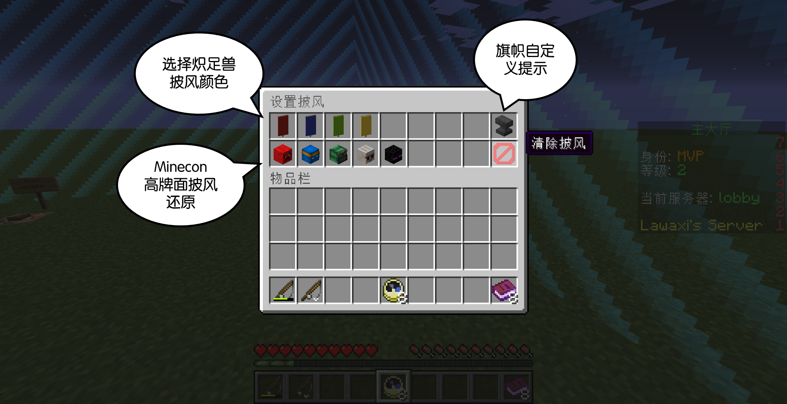
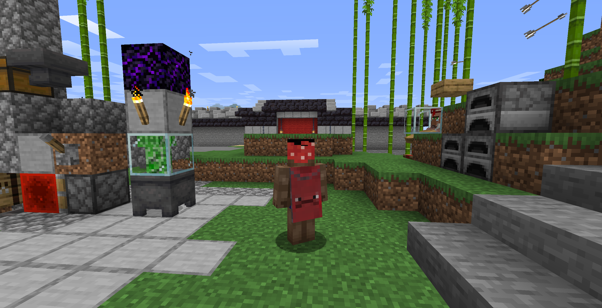
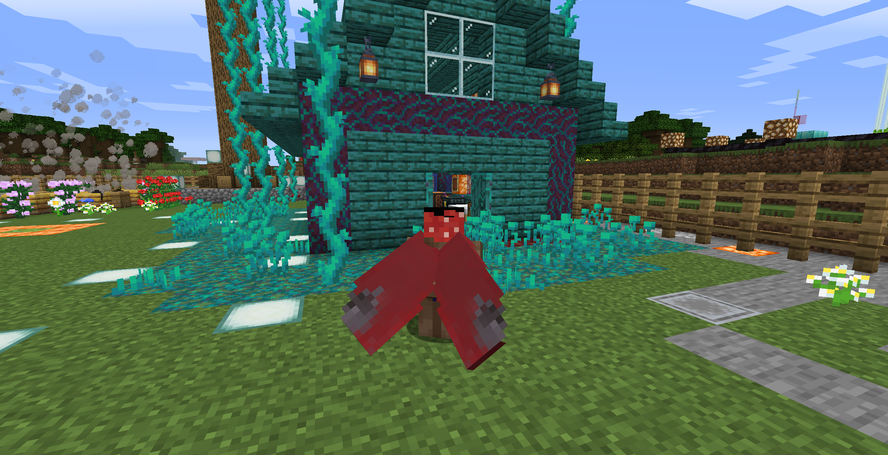

披风数据库
模组
通过本站方法上传的皮肤通过一个fabric mod才可以加载
我选择使用fabric完成这一工作 正是为了支持快照版本
本mod理论上可以运行在任何装有fabric的Minecraft版本
Github开源项目: https://github.com/Lawaxi/LawaxiAntennae
mcbbs发布贴: https://www.mcbbs.net/forum.php?mod=viewthread&tid=1049501
上传
请使用1.12-1.15正版登录服务器 mc.lawaxi.net
并使用/cape 指令打开自定义披风的GUI面板
普通用户可以使用不同颜色的炽足兽披风/旗帜披风/伪Minecon披风
旗帜代码获取: https://www.needcoolshoes.com/banner
例如: iahvoFitiEhgif 效果为
另外，对mod或相关服务器有特别贡献的用户将获得特别赠送的披风
效果展示
 API
从本披风数据库获取玩家披风材质图片(已开放"Access-Control-Allow-Origin")
http://data.lawaxi.net/capes/uuid.png